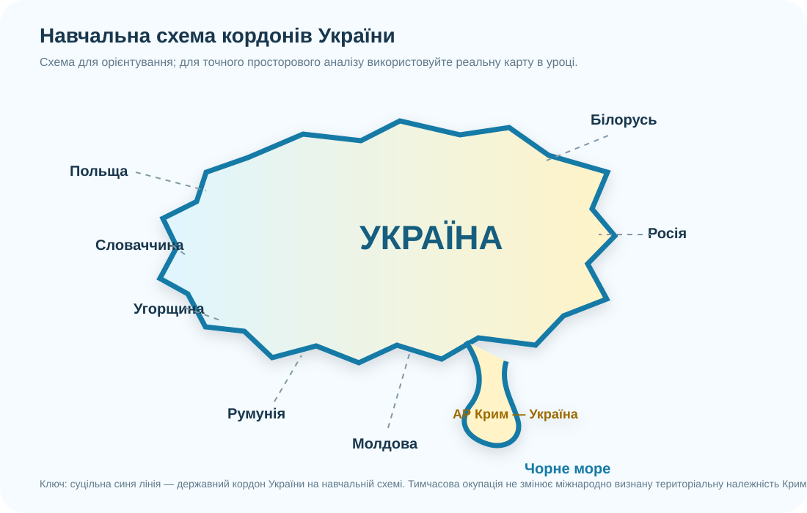

Старт: де закінчується карта і починається безпека?
Сформулюйте коротку гіпотезу: що саме робить кордон дієвим — юридичний документ, координати, знаки на місцевості, контроль чи все разом?

1. Працюємо з реальною картою
Назвіть 7 сухопутних держав-сусідів України. Запишіть їх за годинниковою стрілкою, починаючи з Білорусі.
На карті знайдіть, де державний кордон проходить уздовж річок або гірських районів. Чому природний рубіж не скасовує потреби у точних координатах?
Для просторової перевірки можна також відкрити Державний реєстр географічних назв України.
2. Алгоритм: делімітація ≠ демаркація
Делімітація
Юридичне визначення проходження кордону в договорі, на картах і через координати. Простими словами: «домовилися, де саме проходить лінія».
Демаркація
Перенесення погодженої лінії на місцевість: прикордонні знаки, стовпи, координатні точки, технічні документи. Простими словами: «показали цю лінію в реальному просторі».
Офіційні джерела: Верховна Рада України — Договір Україна–Молдова про державний кордон; Положення про демаркацію державного кордону між Україною і Республікою Молдова.
3. Практична робота: «зібрати кордон»
Якщо працюєте без паперової контурної карти — використайте локальну схему вище як чернетку, але перевіряйте форму й розташування за реальною картою.
Договір про державний кордон діє; окремо ратифіковано положення про демаркацію.
Договір про державний кордон підписано 1997 року; чинності для України він набув 18 червня 2013 року.
Договір про українсько-російський державний кордон ратифіковано Україною 2004 року; збройна агресія РФ не створює законного нового кордону.
4. Три кейси без «очевидної» відповіді
Чому не можна просто сказати: «кордон автоматично переїхав разом із водою»?
5. Швидка перевірка практичної роботи — 10 балів
Домашнє завдання
Опрацюйте тему про державну територію та кордони України. Випишіть по одному прикладу, де карта, договір і польові геодезичні роботи виконують різні функції.
Теза: «Чітко визначений і позначений кордон є елементом безпеки держави». Дайте 1 доказ із уроку й поясніть механізм — як саме цей доказ підтримує тезу.